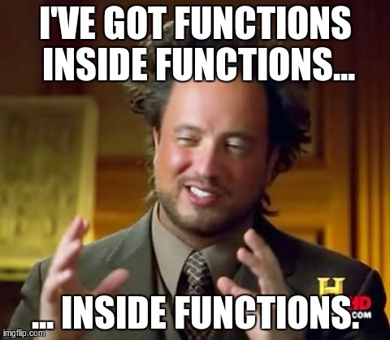

👩🏫 JS Basics 06bis - Fonctions d'ordre supérieur
Objectifs
- Écrire et exécuter des fonctions anonymes en JavaScript
- Comprendre la notion de fonction de rappel (callback)
- Utiliser des fonctions d'ordre supérieur pour la programmation fonctionnelle
Pré-requis
Avoir validé la quête suivante :
Introduction
Dans les quêtes précédentes, tu as découvert pourquoi nous utilisons des fonctions en Javascript et à quoi ressemble leur syntaxe(s). En apprenant le Javascript, tu rencontreras probablement les termes de fonction d'ordre supérieur. A ce stade, tu as probablement déjà utilisé des fonctions d'ordre supérieur sans même t'en apercevoir. Par exemple en enregistrant un écouteur d'événement de clic sur un élément du DOM ;-)
Cette quête vise à te familiariser avec des concepts de programmation fonctionnelle, une façon particulière de programmer centrée sur les fonctions. Si tu t'intéresses à des bibliothèques comme React, tu découvriras que cette dernière tend largement à suivre ce paradigme. C'est donc une lecture qui pourra t'être utile !
C'est parti !
Sommaire
Fonction Anonyme ?
Nous pouvons créer des fonctions sans aucun label, on les appelle des fonctions anonymes.
function() {
console.log("I'm an anonymous function");
}
Mais il n'est pas possible de l'utiliser de cette façon, car sans étiquette notre fonction est inutile et ne fonctionne pas..
Tu n'es pas obligé de te souvenir de cette partie, mais nous avons deux options pour cela :
Nous pourrions auto-invoquer la fonction:
Tu peux lancer instantanément une fonction comme cela :
(function() {
console.log("I'm a self-invoking anonymous function");
})();
Pour information, on appelle ça une IIFE (Immediately Invoked Function Expression).
Une autre façon est de stocker votre fonction anonyme dans une variable:
const helloWorld = function() {
console.log("Hello, world!");
};
helloWorld();
// Hello, World!
Il n'est pas important de se souvenir de tout cela, mais pour l'instant, garde à l'esprit qu'une fonction anonyme est une fonction qui n'a pas de label, donc pas de nom.
Fonctions de rappel et fonctions d'ordre supérieur (Higher-Order Function)
Une fonction d'ordre supérieur est une fonction qui accepte une autre fonction en argument ou qui retourne elle-même une fonction.
Une fonction de rappel (callback) est une fonction passée en paramètre d'une autre fonction.
Regardons un exemple concret. Suppose que dans une application on ait trois fonctions : une pour dire "Hello", une pour dire "Welcome" et une qui demande son nom à l'utilisateur (avec prompt) :
function sayHello(userName) {
console.log(`Hello, ${userName}`);
}
function sayWelcome(userName) {
console.log(`Welcome, ${userName}`);
}
function askUserName() {
const name = prompt("Hey, what's your name?");
}
Imagine que tu veux exécuter des fois sayWelcome et d'autres fois sayHello après avoir demandé son nom à l'utilisateur.
Ce que nous pourrions faire : ajouter un prompt au début de sayHello et sayWelcome.
function sayHello() {
const userName = prompt("Hey, what's your name?");
console.log(`Hello, ${userName}`);
}
function sayWelcome() {
const userName = prompt("Hey, what's your name?");
console.log(`Welcome, ${userName}`);
}
Mais, ce n'est pas très "D.R.Y.", n'est ce pas ?
Une autre option serait d'accepter une fonction en paramètre pour la fonction askUserName. On qualifiera alors cette dernière de fonction d'ordre supérieur.
De cette manière, quand on appellera askUserName, on pourra donner soit sayHello soit sayWelcome en argument (en tant que fonction de rappel).
Concrètement, voilà ce que ça donne :
function sayHello(userName) {
console.log(`Hello, ${userName}`);
}
function sayWelcome(userName) {
console.log(`Welcome, ${userName}`);
}
function askUserName(callback) {
const name = prompt("Hey, what's your name?");
callback(name);
}
askUserName(sayWelcome);
askUserName(sayHello);
Puisque askUserName accepte maintenant une fonction en argument, nous pouvons aussi écrire des fonctions anonymes (qui n'ont pas de nom associé) directement en place de l'argument.
askUserName(function(name) {
console.log(`Hey buddy, welcome ${name}`);
});
Fais une expérience
Créé deux fonctions :
- Une fonction
multiplyqui peut accepter deux paramètres (a,b) et qui retourne le résultat de la multiplication deaparb. - Une fonction
sumqui peut accepter deux paramètres (a,b) et qui retourne le résultat de l'addition deaparb.
Ensuite, créé une fonction d'ordre supérieur appelée calculator. Cette dernière pourra accepter une fonction de rappel ainsi que a et b en paramètres et devra afficher dans la console : "The result is " + la valeur de retour de la fonction de rappel.
Ex:
calculator(sum, 1, 3);
// "The result is 4"
calculator(multiply, 2, 5);
// "The result is 10"
https://repl.it/@LonardFlachs/GoldenrodWorseBackticks
Voir la solution
// We create the multiply function
function multiply(a, b) {
return a * b;
}
// We create the sum function
function sum(a, b) {
return a + b;
}
// We create the calculator function that accept a callback
function calculator(callback, a, b) {
// We use the callback in the console.log to print the result
console.log(`The result is ${callback(a, b)}`);
}
calculator(sum, 1, 3);
// "The result is 4"
calculator(multiply, 2, 5);
// "The result is 10"
Avez-vous dit "retourner une function" ?
Oui.

Imagine que tu souhaites générer des identifiants uniques. En d'autres termes, tu voudrais obtenir un nombre différent à chaque fois que tu appelles une fonction donnée.
let id = 0;
function generateUniqueId() {
id = id + 1;
return id;
}
console.log(generateUniqueId()); // 1
console.log(generateUniqueId()); // 2
console.log(generateUniqueId()); // 3
Mais étant un.e bon.ne développeu.r.se, tu voudrais éviter d'avoir une variable globale dans ton code... Bien, tu pourrais écrire quelque chose comme ça :
https://replit.com/@PierreGenthon/genId
Quiz
true|||true|||false
# Qu'est ce qu'une fonction d'ordre supérieur ?
[] Une fonction définie avant toute autre fonction
[x] Une fonction qui accepte une autre fonction en paramètre ou retourne une fonction
[] Une fonction invoquée avant toute autre fonction du scope
# Quelle est la définition d'une fonction anonyme ?
[] Cela signifie qu'il y a une fonction inconnue et risquée dans le code
[] Cela signifie qu'il n'est pas possible d'appeler une telle fonction
[x] Il s'agit simplement d'une fonction sans aucune étiquette
# Qu'est-ce qu'une fonction passée comme argument d'une fonction d'ordre supérieur ?
[] Il s'agit toujours d'une fonction anonyme
[] Une fonction de second ordre
[x] Une fonction de rappel
# Quels sont les moyens d'invoquer une fonction anonyme ?
[] Ce n'est pas possible
[x] En stockant une fonction anonyme dans une variable
[x] En la faisant passer comme argument d'une fonction d'ordre supérieur, la fonction d'ordre supérieur pourrait rappeler cette fonction anonyme
Challenge
À partir d'un tableau contenant des noms de personnes tu dois :
- Créer une fonction
changeNamequi prend en paramètre un nom commeanTHoNYet retourne la chaine de caractères avec la casse corrigée (Anthony). - Créer une fonction
changeAllNamesqui accepte deux paramètres : un tableau et une fonction de rappel. - Dans
changeAllNames, renvoyer le tableau original mais avec tous les noms transformés par la fonction de rappel en paramètre. - Appeler
changeAllNamesen lui passant en paramètre le tableaupeoplesuivant et la fonctionchangeName.
// Given an array of names of people but mixing lower case and upper case letters, you will have to:
// - Create a function that contains the logic to refactor those names so it converts a name like `anTHoNY` to `Anthony`.
// - A function that accepts two parameters: an array and a callback function that is in charge of refactoring all items inside that array
// - Return the original array but with all names properly typed
const people = ['JoHn', 'ChrISTiana', 'anThoNY', 'MARia', 'jaMeS', 'MIChaEl', 'jeNNIFeR'];
Critères d'acceptation
- [ ] Toutes les instructions sont respectées